<!DOCTYPE html>
<html xmlns="http://www.w3.org/1999/xhtml" lang="en" xml:lang="en"><head>

<meta charset="utf-8">
<meta name="generator" content="quarto-1.2.475">

<meta name="viewport" content="width=device-width, initial-scale=1.0, user-scalable=yes">


<title>Visualización de datos</title>
<style>
code{white-space: pre-wrap;}
span.smallcaps{font-variant: small-caps;}
div.columns{display: flex; gap: min(4vw, 1.5em);}
div.column{flex: auto; overflow-x: auto;}
div.hanging-indent{margin-left: 1.5em; text-indent: -1.5em;}
ul.task-list{list-style: none;}
ul.task-list li input[type="checkbox"] {
  width: 0.8em;
  margin: 0 0.8em 0.2em -1.6em;
  vertical-align: middle;
}
pre > code.sourceCode { white-space: pre; position: relative; }
pre > code.sourceCode > span { display: inline-block; line-height: 1.25; }
pre > code.sourceCode > span:empty { height: 1.2em; }
.sourceCode { overflow: visible; }
code.sourceCode > span { color: inherit; text-decoration: inherit; }
div.sourceCode { margin: 1em 0; }
pre.sourceCode { margin: 0; }
@media screen {
div.sourceCode { overflow: auto; }
}
@media print {
pre > code.sourceCode { white-space: pre-wrap; }
pre > code.sourceCode > span { text-indent: -5em; padding-left: 5em; }
}
pre.numberSource code
  { counter-reset: source-line 0; }
pre.numberSource code > span
  { position: relative; left: -4em; counter-increment: source-line; }
pre.numberSource code > span > a:first-child::before
  { content: counter(source-line);
    position: relative; left: -1em; text-align: right; vertical-align: baseline;
    border: none; display: inline-block;
    -webkit-touch-callout: none; -webkit-user-select: none;
    -khtml-user-select: none; -moz-user-select: none;
    -ms-user-select: none; user-select: none;
    padding: 0 4px; width: 4em;
    color: #aaaaaa;
  }
pre.numberSource { margin-left: 3em; border-left: 1px solid #aaaaaa;  padding-left: 4px; }
div.sourceCode
  {   }
@media screen {
pre > code.sourceCode > span > a:first-child::before { text-decoration: underline; }
}
code span.al { color: #ff0000; font-weight: bold; } /* Alert */
code span.an { color: #60a0b0; font-weight: bold; font-style: italic; } /* Annotation */
code span.at { color: #7d9029; } /* Attribute */
code span.bn { color: #40a070; } /* BaseN */
code span.bu { color: #008000; } /* BuiltIn */
code span.cf { color: #007020; font-weight: bold; } /* ControlFlow */
code span.ch { color: #4070a0; } /* Char */
code span.cn { color: #880000; } /* Constant */
code span.co { color: #60a0b0; font-style: italic; } /* Comment */
code span.cv { color: #60a0b0; font-weight: bold; font-style: italic; } /* CommentVar */
code span.do { color: #ba2121; font-style: italic; } /* Documentation */
code span.dt { color: #902000; } /* DataType */
code span.dv { color: #40a070; } /* DecVal */
code span.er { color: #ff0000; font-weight: bold; } /* Error */
code span.ex { } /* Extension */
code span.fl { color: #40a070; } /* Float */
code span.fu { color: #06287e; } /* Function */
code span.im { color: #008000; font-weight: bold; } /* Import */
code span.in { color: #60a0b0; font-weight: bold; font-style: italic; } /* Information */
code span.kw { color: #007020; font-weight: bold; } /* Keyword */
code span.op { color: #666666; } /* Operator */
code span.ot { color: #007020; } /* Other */
code span.pp { color: #bc7a00; } /* Preprocessor */
code span.sc { color: #4070a0; } /* SpecialChar */
code span.ss { color: #bb6688; } /* SpecialString */
code span.st { color: #4070a0; } /* String */
code span.va { color: #19177c; } /* Variable */
code span.vs { color: #4070a0; } /* VerbatimString */
code span.wa { color: #60a0b0; font-weight: bold; font-style: italic; } /* Warning */
</style>


<script src="site_libs/quarto-nav/quarto-nav.js"></script>
<script src="site_libs/quarto-nav/headroom.min.js"></script>
<script src="site_libs/clipboard/clipboard.min.js"></script>
<script src="site_libs/quarto-search/autocomplete.umd.js"></script>
<script src="site_libs/quarto-search/fuse.min.js"></script>
<script src="site_libs/quarto-search/quarto-search.js"></script>
<meta name="quarto:offset" content="./">
<script src="site_libs/quarto-html/quarto.js"></script>
<script src="site_libs/quarto-html/popper.min.js"></script>
<script src="site_libs/quarto-html/tippy.umd.min.js"></script>
<script src="site_libs/quarto-html/anchor.min.js"></script>
<link href="site_libs/quarto-html/tippy.css" rel="stylesheet">
<link href="site_libs/quarto-html/quarto-syntax-highlighting.css" rel="stylesheet" id="quarto-text-highlighting-styles">
<script src="site_libs/bootstrap/bootstrap.min.js"></script>
<link href="site_libs/bootstrap/bootstrap-icons.css" rel="stylesheet">
<link href="site_libs/bootstrap/bootstrap.min.css" rel="stylesheet" id="quarto-bootstrap" data-mode="light">
<script id="quarto-search-options" type="application/json">{
  "location": "navbar",
  "copy-button": false,
  "collapse-after": 3,
  "panel-placement": "end",
  "type": "overlay",
  "limit": 20,
  "language": {
    "search-no-results-text": "No results",
    "search-matching-documents-text": "matching documents",
    "search-copy-link-title": "Copy link to search",
    "search-hide-matches-text": "Hide additional matches",
    "search-more-match-text": "more match in this document",
    "search-more-matches-text": "more matches in this document",
    "search-clear-button-title": "Clear",
    "search-detached-cancel-button-title": "Cancel",
    "search-submit-button-title": "Submit"
  }
}</script>


</head>

<body class="nav-fixed fullcontent">

<div id="quarto-search-results"></div>
  <header id="quarto-header" class="headroom fixed-top">
    <nav class="navbar navbar-expand-lg navbar-dark ">
      <div class="navbar-container container-fluid">
          <button class="navbar-toggler" type="button" data-bs-toggle="collapse" data-bs-target="#navbarCollapse" aria-controls="navbarCollapse" aria-expanded="false" aria-label="Toggle navigation" onclick="if (window.quartoToggleHeadroom) { window.quartoToggleHeadroom(); }">
  <span class="navbar-toggler-icon"></span>
</button>
          <div class="collapse navbar-collapse" id="navbarCollapse">
            <ul class="navbar-nav navbar-nav-scroll me-auto">
  <li class="nav-item">
    <a class="nav-link" href="./index.html">
 <span class="menu-text">Inicio</span></a>
  </li>  
  <li class="nav-item">
    <a class="nav-link" href="./intro.html">
 <span class="menu-text">Introducción</span></a>
  </li>  
  <li class="nav-item">
    <a class="nav-link active" href="./view.html" aria-current="page">
 <span class="menu-text">Visualización</span></a>
  </li>  
  <li class="nav-item">
    <a class="nav-link" href="./about.qmd">
 <span class="menu-text">About</span></a>
  </li>  
</ul>
              <div id="quarto-search" class="" title="Search"></div>
          </div> <!-- /navcollapse -->
      </div> <!-- /container-fluid -->
    </nav>
</header>
<!-- content -->
<div id="quarto-content" class="quarto-container page-columns page-rows-contents page-layout-article page-navbar">
<!-- sidebar -->
<!-- margin-sidebar -->
    
<!-- main -->
<main class="content" id="quarto-document-content">

<header id="title-block-header" class="quarto-title-block default">
<div class="quarto-title">
<h1 class="title">Visualización de datos</h1>
</div>


<div class="quarto-title-meta">

    
  
    
  </div>
  

</header>

<section id="quarto" class="level2">
<h2 class="anchored" data-anchor-id="quarto">Introducción</h2>
<p>Aunque parezca lo más práctico comenzar con la organización y transformación de los datos, comenzaremos por el otro lado. Veamos primero cómo crear gráficos coherentes y hasta elegantes.</p>
<p>Utilizaremos el paquete <strong>ggplot</strong>, que utiliza un sistema conocido como la <em>gramática de gráficos</em>. Carguemos dicho paquete, además del conjunto de datos a utilizar:</p>
<div class="cell">
<div class="sourceCode cell-code" id="cb1"><pre class="sourceCode r code-with-copy"><code class="sourceCode r"><span id="cb1-1"><a href="#cb1-1" aria-hidden="true" tabindex="-1"></a><span class="fu">library</span>(tidyverse)</span></code><button title="Copy to Clipboard" class="code-copy-button"><i class="bi"></i></button></pre></div>
<div class="cell-output cell-output-stderr">
<pre><code>── Attaching core tidyverse packages ──────────────────────── tidyverse 2.0.0 ──
✔ dplyr     1.1.0     ✔ readr     2.1.4
✔ forcats   1.0.0     ✔ stringr   1.5.0
✔ ggplot2   3.4.1     ✔ tibble    3.2.0
✔ lubridate 1.9.2     ✔ tidyr     1.3.0
✔ purrr     1.0.1     
── Conflicts ────────────────────────────────────────── tidyverse_conflicts() ──
✖ dplyr::filter() masks stats::filter()
✖ dplyr::lag()    masks stats::lag()
ℹ Use the ]8;;http://conflicted.r-lib.org/conflicted package]8;; to force all conflicts to become errors</code></pre>
</div>
<div class="sourceCode cell-code" id="cb3"><pre class="sourceCode r code-with-copy"><code class="sourceCode r"><span id="cb3-1"><a href="#cb3-1" aria-hidden="true" tabindex="-1"></a><span class="fu">library</span>(datos)</span></code><button title="Copy to Clipboard" class="code-copy-button"><i class="bi"></i></button></pre></div>
</div>
</section>
<section id="nuestro-primer-gráfico" class="level2">
<h2 class="anchored" data-anchor-id="nuestro-primer-gráfico">Nuestro primer gráfico</h2>
<p>Crearemos nuestro primer gráfico con <strong>ggplot</strong> y probaremos con datos reales que a mayor tamaño de motor de un coche, mayor consumo de gasolina tendrá. Para ello, debemos estar seguros de haber cargado correctamente tanto el Tydiverse como el conjunto <code>datos</code>. Enseguida mostraremos un <em>data frame,</em> lo cual es un conjunto rectangular de datos organizados en columnas (que vienen siendo las variables) y filas (éstas son las observaciones). Este <em>data frame</em> es llamado <code>millas</code>, el cual está contenido en <code>datos</code> (<code>datos::millas</code>).</p>
<div class="cell">
<div class="sourceCode cell-code" id="cb4"><pre class="sourceCode r code-with-copy"><code class="sourceCode r"><span id="cb4-1"><a href="#cb4-1" aria-hidden="true" tabindex="-1"></a>millas</span></code><button title="Copy to Clipboard" class="code-copy-button"><i class="bi"></i></button></pre></div>
<div class="cell-output cell-output-stdout">
<pre><code># A tibble: 234 × 11
   fabrica…¹ modelo cilin…²  anio cilin…³ trans…⁴ tracc…⁵ ciudad autop…⁶ combu…⁷
   &lt;chr&gt;     &lt;chr&gt;    &lt;dbl&gt; &lt;int&gt;   &lt;int&gt; &lt;chr&gt;   &lt;chr&gt;    &lt;int&gt;   &lt;int&gt; &lt;chr&gt;  
 1 audi      a4         1.8  1999       4 auto(l… d           18      29 p      
 2 audi      a4         1.8  1999       4 manual… d           21      29 p      
 3 audi      a4         2    2008       4 manual… d           20      31 p      
 4 audi      a4         2    2008       4 auto(a… d           21      30 p      
 5 audi      a4         2.8  1999       6 auto(l… d           16      26 p      
 6 audi      a4         2.8  1999       6 manual… d           18      26 p      
 7 audi      a4         3.1  2008       6 auto(a… d           18      27 p      
 8 audi      a4 qu…     1.8  1999       4 manual… 4           18      26 p      
 9 audi      a4 qu…     1.8  1999       4 auto(l… 4           16      25 p      
10 audi      a4 qu…     2    2008       4 manual… 4           20      28 p      
# … with 224 more rows, 1 more variable: clase &lt;chr&gt;, and abbreviated variable
#   names ¹​fabricante, ²​cilindrada, ³​cilindros, ⁴​transmision, ⁵​traccion,
#   ⁶​autopista, ⁷​combustible</code></pre>
</div>
</div>
<p>Podemos observar que nos muestra sólo las primeras 10 filas e incluso menciona lo faltante: 224 filas y una columna adicionales. Es solo la visualización, el conjunto se encuentra completo en la memoria de R, por comodidad y practicidad es mejor mostrarlos así. También es posible notar que los nombres de las variables no aparecen completos, pero se especifican en la parte inferior del resultado arrojado.</p>
<p>De todas las columnas / variables mostradas, nos interesan la <code>cilindrada</code> (lo cual se refiere al tamaño del motor en litros) y <code>autopista</code>, que muestra la eficiencia del coche en millas recorridas por galón de combustible.</p>
<section id="gráfico-de-dispersión-con-ggplot" class="level3">
<h3 class="anchored" data-anchor-id="gráfico-de-dispersión-con-ggplot">Gráfico de dispersión con ggplot</h3>
<p>Para poder mostrar un gráfico con las variables mencionadas anteriormente, debemos introducir el siguiente código:</p>
<div class="cell">
<div class="sourceCode cell-code" id="cb6"><pre class="sourceCode r code-with-copy"><code class="sourceCode r"><span id="cb6-1"><a href="#cb6-1" aria-hidden="true" tabindex="-1"></a><span class="fu">ggplot</span>(<span class="at">data =</span> millas) <span class="sc">+</span></span>
<span id="cb6-2"><a href="#cb6-2" aria-hidden="true" tabindex="-1"></a>  <span class="fu">geom_point</span>(<span class="at">mapping =</span> <span class="fu">aes</span>(<span class="at">x =</span> cilindrada, <span class="at">y =</span> autopista))</span></code><button title="Copy to Clipboard" class="code-copy-button"><i class="bi"></i></button></pre></div>
<div class="cell-output-display">
<p>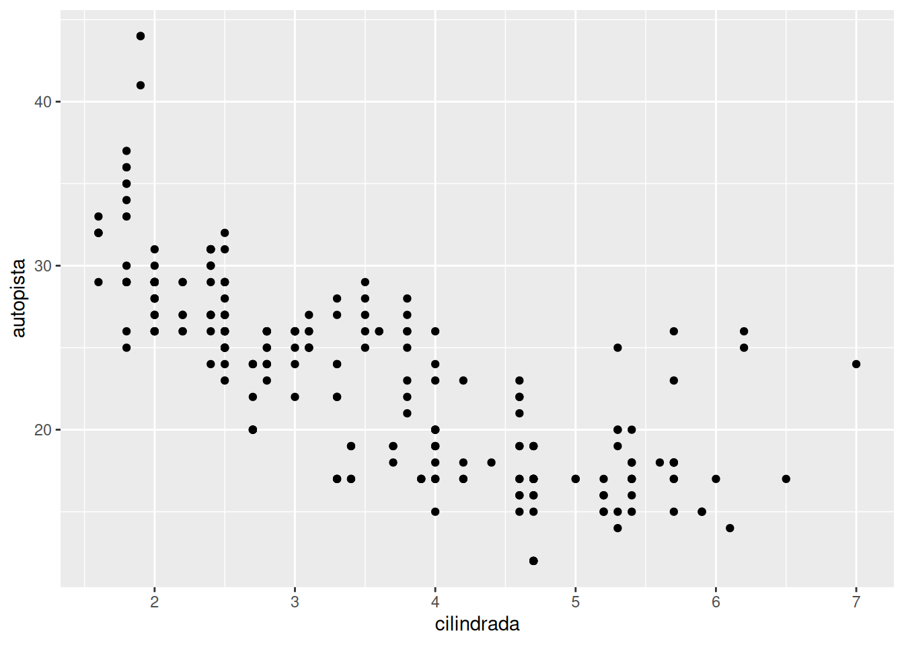</p>
</div>
</div>
<p>Este gráfico muestra una relación negativa entre el tamaño del motor y la eficiencia del combustible. O lo que es lo mismo, a mayor tamaño de motor, menos eficiente el combustible.</p>
<p>Expliquemos las líneas que ejecutamos para obtener el gráfico. En primer lugar, usamos la función <code>ggplot</code>. El primer argumento de esta función es el conjunto de datos a graficar. Sin embargo, no resulta atractivo el resultado si lo dejamos solo con ese argumento (mostrará un gráfico vacío). Notemos que en segundo lugar, tenemos un signo “+”. Éste nos indica que estamos agregando una capa a <code>ggplot()</code>, la cual es definida por la función <code>geom_point</code>, que no es otra cosa más que una capa de puntos. Esta capa se corresponde con un diagrama de dispersión.</p>
<p>El argumento de <code>geom_point()</code> es <code>mapping</code>, el cual define cómo se asignan las variables a la parte visual. Podemos notar que aparece emparejado con la función <code>aes()</code>, la cual determina cuál variable se corresponde con el eje <em>x</em> y cuál al eje <em>y</em> del plano o gráfico. <strong>ggplot</strong> buscará las variables dentro del conjunto de datos.</p>
<p>Practiquemos un poco más. Ahora crearemos un gráfico de dispersión <code>autopista</code> contra <code>cilindros</code>.</p>
<div class="cell">
<div class="sourceCode cell-code" id="cb7"><pre class="sourceCode r code-with-copy"><code class="sourceCode r"><span id="cb7-1"><a href="#cb7-1" aria-hidden="true" tabindex="-1"></a><span class="fu">ggplot</span>(<span class="at">data =</span> millas) <span class="sc">+</span></span>
<span id="cb7-2"><a href="#cb7-2" aria-hidden="true" tabindex="-1"></a>  <span class="fu">geom_point</span>(<span class="at">mapping =</span> <span class="fu">aes</span>(<span class="at">x =</span> autopista, <span class="at">y =</span> cilindros))</span></code><button title="Copy to Clipboard" class="code-copy-button"><i class="bi"></i></button></pre></div>
<div class="cell-output-display">
<p>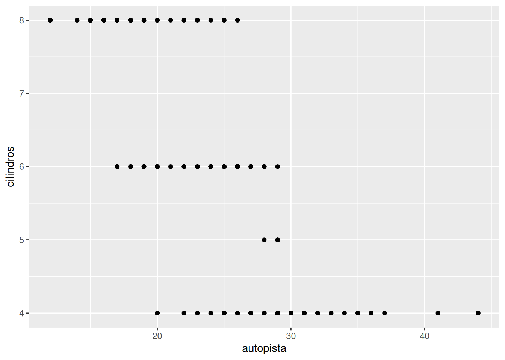</p>
</div>
</div>
</section>
</section>
<section id="mapeos-estéticos" class="level2">
<h2 class="anchored" data-anchor-id="mapeos-estéticos">Mapeos estéticos</h2>
<p>Comencemos a darle mayor personalización a nuestros gráficos. Es probable que deseemos cambiar el color de los puntos de nuestro gráfico de dispersión, basados en algún parámetro. <strong>ggplot</strong> nos permite cambiar la forma, el color y el tamaño de los puntos, basados en algo llamado <em>parámetro estético</em>. Para diferenciar del uso de la palabra <em>valor</em> en los datos, describiremos los cambios como <em>niveles</em> para los estéticos.</p>
<p>Utilicemos como criterio estético la variable <code>clase</code>, la cual indica el tipo de vehículo que tenemos en el conjunto de datos. Agreguemos pues esta variable como parte del mapeo (es decir, dentro de la función <code>aes()</code>), sin olvidar que el gráfico de dispersión necesita dos valores numéricos para los ejes, por lo que esta tercera variable también forma parte de los detalles estéticos.</p>
<div class="cell">
<div class="sourceCode cell-code" id="cb8"><pre class="sourceCode r code-with-copy"><code class="sourceCode r"><span id="cb8-1"><a href="#cb8-1" aria-hidden="true" tabindex="-1"></a><span class="fu">ggplot</span>(<span class="at">data =</span> millas) <span class="sc">+</span></span>
<span id="cb8-2"><a href="#cb8-2" aria-hidden="true" tabindex="-1"></a>  <span class="fu">geom_point</span>(<span class="at">mapping =</span> <span class="fu">aes</span>(<span class="at">x =</span> cilindrada, <span class="at">y =</span> autopista, <span class="at">color =</span> clase))</span></code><button title="Copy to Clipboard" class="code-copy-button"><i class="bi"></i></button></pre></div>
<div class="cell-output-display">
<p>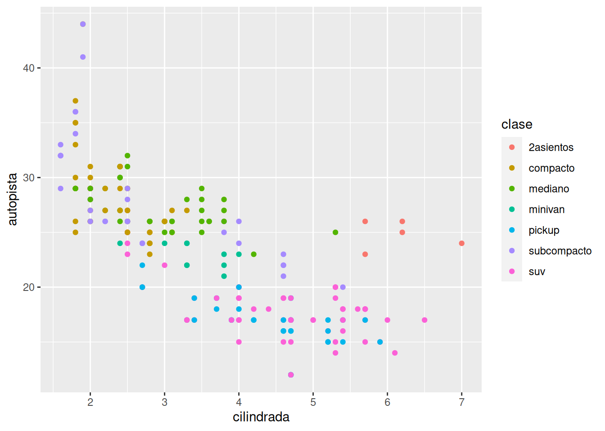</p>
</div>
</div>
<p>Así, hemos conseguido asignar un color único a cada valor de la variable <code>clase</code>. Es más fácil identificar el tipo de coche que hemos graficado. Notemos que <strong>ggplot</strong> ha agregado una leyenda indicando cuál color corresponde a qué valor.</p>
<p>Si lo que deseamos utilizar para diferenciar los datos es el tamaño, optaremos por utilizar en los estéticos el argumento <code>size</code> en lugar de <code>color</code>.</p>
<div class="cell">
<div class="sourceCode cell-code" id="cb9"><pre class="sourceCode r code-with-copy"><code class="sourceCode r"><span id="cb9-1"><a href="#cb9-1" aria-hidden="true" tabindex="-1"></a><span class="fu">ggplot</span>(<span class="at">data =</span> millas) <span class="sc">+</span></span>
<span id="cb9-2"><a href="#cb9-2" aria-hidden="true" tabindex="-1"></a>  <span class="fu">geom_point</span>(<span class="at">mapping =</span> <span class="fu">aes</span>(<span class="at">x =</span> cilindrada, <span class="at">y =</span> autopista, <span class="at">size =</span> clase))</span></code><button title="Copy to Clipboard" class="code-copy-button"><i class="bi"></i></button></pre></div>
<div class="cell-output cell-output-stderr">
<pre><code>Warning: Using size for a discrete variable is not advised.</code></pre>
</div>
<div class="cell-output-display">
<p>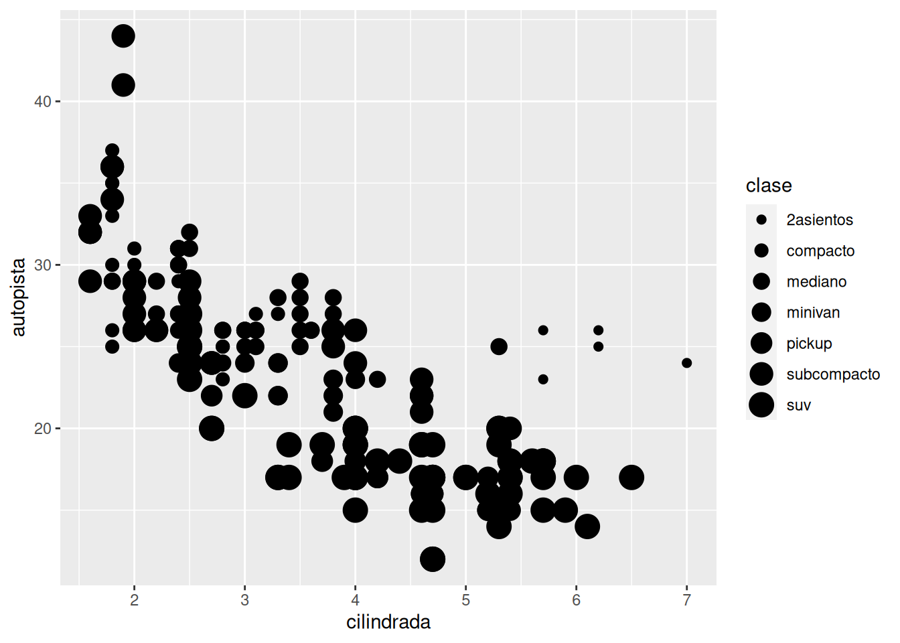</p>
</div>
</div>
<p>El propio R nos hará una advertencia relacionada con el hecho de que utilizar una variable nominal como <code>clase</code> como criterio estético en cuanto a tamaño no resulta ser una buena idea.</p>
<p>Veamos cómo cambiar la transparencia como parámetro estético:</p>
<div class="cell">
<div class="sourceCode cell-code" id="cb11"><pre class="sourceCode r code-with-copy"><code class="sourceCode r"><span id="cb11-1"><a href="#cb11-1" aria-hidden="true" tabindex="-1"></a><span class="fu">ggplot</span>(<span class="at">data =</span> millas) <span class="sc">+</span></span>
<span id="cb11-2"><a href="#cb11-2" aria-hidden="true" tabindex="-1"></a>  <span class="fu">geom_point</span>(<span class="at">mapping =</span> <span class="fu">aes</span>(<span class="at">x =</span> cilindrada, <span class="at">y =</span> autopista, <span class="at">alpha =</span> clase))</span></code><button title="Copy to Clipboard" class="code-copy-button"><i class="bi"></i></button></pre></div>
<div class="cell-output cell-output-stderr">
<pre><code>Warning: Using alpha for a discrete variable is not advised.</code></pre>
</div>
<div class="cell-output-display">
<p>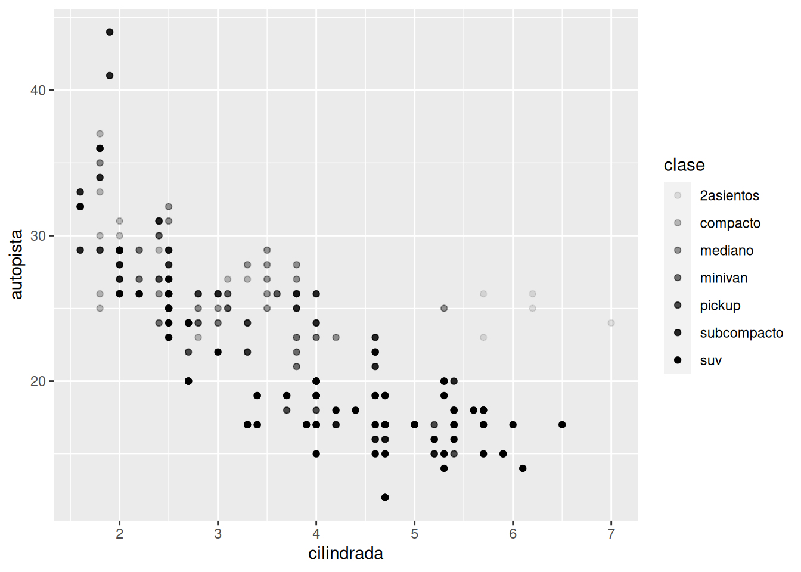</p>
</div>
</div>
<p>Ahora, utilizaremos la variable <code>clase</code> para cambiar la forma de los puntos. Cabe mencionar que solo es posible graficar seis formas diferentes a la vez, por lo que si contamos con m[as niveles, estos no se graficarán.</p>
<div class="cell">
<div class="sourceCode cell-code" id="cb13"><pre class="sourceCode r code-with-copy"><code class="sourceCode r"><span id="cb13-1"><a href="#cb13-1" aria-hidden="true" tabindex="-1"></a><span class="fu">ggplot</span>(<span class="at">data =</span> millas) <span class="sc">+</span></span>
<span id="cb13-2"><a href="#cb13-2" aria-hidden="true" tabindex="-1"></a>  <span class="fu">geom_point</span>(<span class="at">mapping =</span> <span class="fu">aes</span>(<span class="at">x =</span> cilindrada, <span class="at">y =</span> autopista, <span class="at">shape =</span> clase))</span></code><button title="Copy to Clipboard" class="code-copy-button"><i class="bi"></i></button></pre></div>
<div class="cell-output cell-output-stderr">
<pre><code>Warning: The shape palette can deal with a maximum of 6 discrete values because
more than 6 becomes difficult to discriminate; you have 7. Consider
specifying shapes manually if you must have them.</code></pre>
</div>
<div class="cell-output cell-output-stderr">
<pre><code>Warning: Removed 62 rows containing missing values (`geom_point()`).</code></pre>
</div>
<div class="cell-output-display">
<p>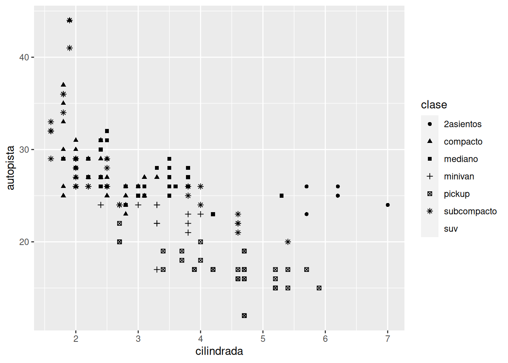</p>
</div>
</div>
<p>Si en dado caso deseamos utilizar el color para fines meramente estéticos, es decir, sin que aporten información, podemos colorear el gráfico diciéndole a <strong>ggplot</strong> que cambiaremos el color fuera de la parte estética. Es decir, fuera de <code>aes()</code>. Cambiemos el color de los puntos a rojo:</p>
<div class="cell">
<div class="sourceCode cell-code" id="cb16"><pre class="sourceCode r code-with-copy"><code class="sourceCode r"><span id="cb16-1"><a href="#cb16-1" aria-hidden="true" tabindex="-1"></a><span class="fu">ggplot</span>(<span class="at">data =</span> millas) <span class="sc">+</span></span>
<span id="cb16-2"><a href="#cb16-2" aria-hidden="true" tabindex="-1"></a>  <span class="fu">geom_point</span>(<span class="at">mapping =</span> <span class="fu">aes</span>(<span class="at">x =</span> cilindrada, <span class="at">y =</span> autopista), <span class="at">color =</span> <span class="st">"red"</span>)</span></code><button title="Copy to Clipboard" class="code-copy-button"><i class="bi"></i></button></pre></div>
<div class="cell-output-display">
<p>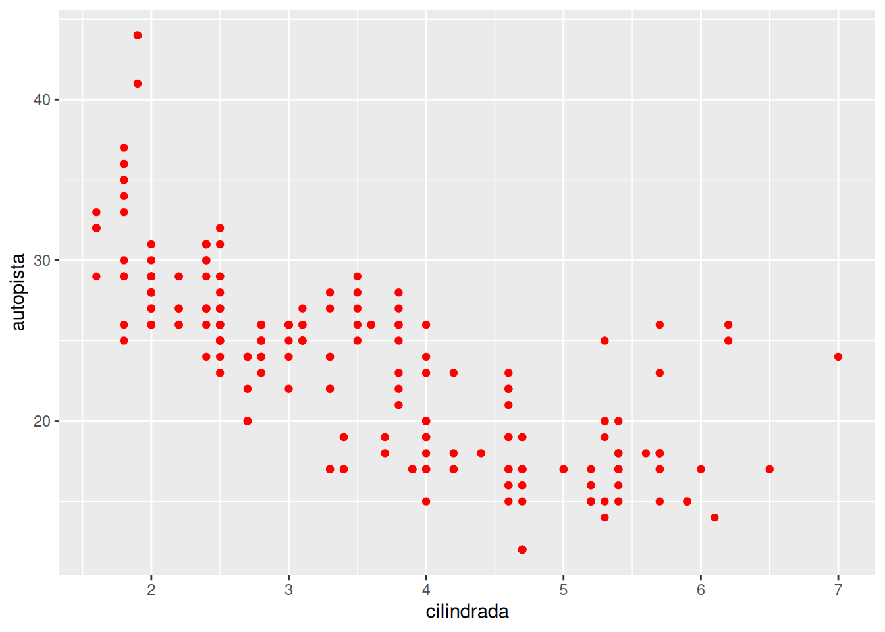</p>
</div>
</div>
<p>R permite cambiar los puntos en cuanto a color (escribiendo entrecomillado el nombre del color en inglés), tamaño (especificando en mm) y la forma (utilizando uno de los 25 números disponibles, por ejemplo el 0 es un cuadrado, el 1 un círculo y el 2 un triángulo).</p>
<section id="facetas" class="level3">
<h3 class="anchored" data-anchor-id="facetas">Facetas</h3>
<p>Podemos separar los gráficos de acuerdo a variables categóricas. Por ejemplo, es posible que deseemos elaborar un gráfico por cada clase de vehículo. Esto implica una separación con base en una sola variable. Lo realizamos de la siguiente manera:</p>
<div class="cell">
<div class="sourceCode cell-code" id="cb17"><pre class="sourceCode r code-with-copy"><code class="sourceCode r"><span id="cb17-1"><a href="#cb17-1" aria-hidden="true" tabindex="-1"></a><span class="fu">ggplot</span>(<span class="at">data =</span> millas) <span class="sc">+</span></span>
<span id="cb17-2"><a href="#cb17-2" aria-hidden="true" tabindex="-1"></a>  <span class="fu">geom_point</span>(<span class="at">mapping =</span> <span class="fu">aes</span>(<span class="at">x =</span> cilindrada, <span class="at">y =</span> autopista)) <span class="sc">+</span></span>
<span id="cb17-3"><a href="#cb17-3" aria-hidden="true" tabindex="-1"></a>  <span class="fu">facet_wrap</span>(<span class="sc">~</span>clase, <span class="at">nrow =</span> <span class="dv">2</span>)</span></code><button title="Copy to Clipboard" class="code-copy-button"><i class="bi"></i></button></pre></div>
<div class="cell-output-display">
<p>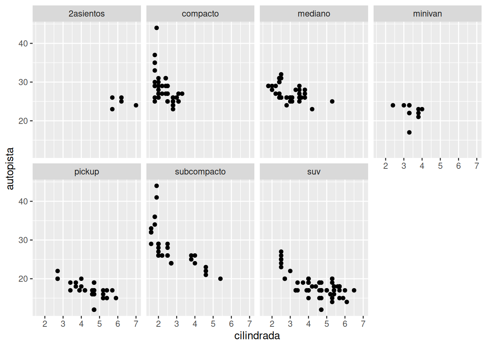</p>
</div>
</div>
<p>Notemos que agregamos una capa más a <strong>ggplot</strong> con el signo ‘+’, en dicha capa escribimos <code>facet_wrap()</code> y dentro suyo una fórmula con variables categóricas. En nuestro caso, la variable <code>clase</code>. El argumento <code>nrow</code> se refiere al número de renglones o filas que queremos tener en la representación de los diferentes gráficos.</p>
<p>Si por otro lado, deseamos separar los datos con base en dos variables, utilizaremos <code>facet_grid()</code>, la cual admite una fórmula con los nombres de las variables separadas por la virgulilla <code>~</code>. Veamos cómo hacerlo con las variables <code>traccion</code> y <code>cilindros</code>.</p>
<div class="cell">
<div class="sourceCode cell-code" id="cb18"><pre class="sourceCode r code-with-copy"><code class="sourceCode r"><span id="cb18-1"><a href="#cb18-1" aria-hidden="true" tabindex="-1"></a><span class="fu">ggplot</span>(<span class="at">data =</span> millas) <span class="sc">+</span></span>
<span id="cb18-2"><a href="#cb18-2" aria-hidden="true" tabindex="-1"></a>  <span class="fu">geom_point</span>(<span class="at">mapping =</span> <span class="fu">aes</span>(<span class="at">x =</span> cilindrada, <span class="at">y =</span> autopista)) <span class="sc">+</span></span>
<span id="cb18-3"><a href="#cb18-3" aria-hidden="true" tabindex="-1"></a>  <span class="fu">facet_grid</span>(traccion <span class="sc">~</span> cilindros)</span></code><button title="Copy to Clipboard" class="code-copy-button"><i class="bi"></i></button></pre></div>
<div class="cell-output-display">
<p>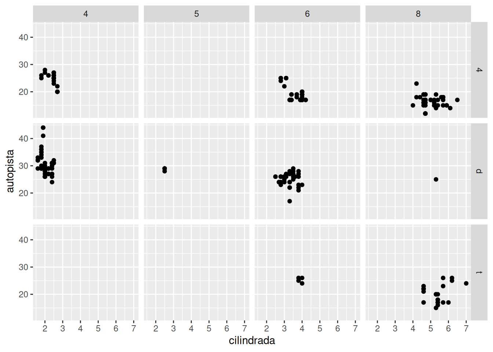</p>
</div>
</div>
</section>
</section>
<section id="objetos-geométricos" class="level2">
<h2 class="anchored" data-anchor-id="objetos-geométricos">Objetos geométricos</h2>
<p>En <strong>ggplot</strong> se conoce a los tipos de gráficos como <strong>geom</strong>. Tenemos geom de barra (<em>bar</em>), de línea (<em>line</em>), de línea suavizada (<em>smooth</em>), de caja (<em>boxplot</em>), o de dispersión (<em>point</em>). Cada geom tendrá sus propias opciones de personalización. <strong>ggplot</strong> cuenta con más de 40 geoms, para referencia sobre ellos podemos acceder a la hoja de referencias disponible en este <a href="https://posit.co/wp-content/uploads/2022/10/data-visualization-1.pdf">pdf</a>.</p>
<p>Veamos algunas de los geoms disponibles.</p>
<section id="línea-suavizada" class="level3">
<h3 class="anchored" data-anchor-id="línea-suavizada">Línea suavizada</h3>
<p>Utilicemos la gráfica de línea suavizada o <code>geom_smooth()</code> con exactamente los mismos datos que hemos venido utilizando con <code>geom_point()</code>.</p>
<div class="cell">
<div class="sourceCode cell-code" id="cb19"><pre class="sourceCode r code-with-copy"><code class="sourceCode r"><span id="cb19-1"><a href="#cb19-1" aria-hidden="true" tabindex="-1"></a><span class="fu">ggplot</span>(<span class="at">data =</span> millas) <span class="sc">+</span></span>
<span id="cb19-2"><a href="#cb19-2" aria-hidden="true" tabindex="-1"></a>  <span class="fu">geom_smooth</span>(<span class="at">mapping =</span> <span class="fu">aes</span>(<span class="at">x =</span> cilindrada, <span class="at">y =</span> autopista))</span></code><button title="Copy to Clipboard" class="code-copy-button"><i class="bi"></i></button></pre></div>
<div class="cell-output cell-output-stderr">
<pre><code>`geom_smooth()` using method = 'loess' and formula = 'y ~ x'</code></pre>
</div>
<div class="cell-output-display">
<p>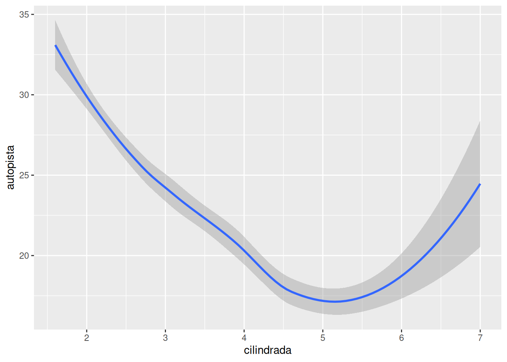</p>
</div>
</div>
<p>Podemos notar que tanto el geom de dispersión como el de línea suavizada son prácticamente lo mismo en cuanto a código, diferenciándose únicamente por el nombre del geom. Sin embargo, hay parámetros estéticos que tienen sentido en uno y no en el otro. Por ejemplo, cabría esperar modificar la forma de los puntos pero no de una línea.</p>
<p>Cambiemos la apariencia de las líneas suavizadas con base en el tipo de transmisión de los vehículos:</p>
<div class="cell">
<div class="sourceCode cell-code" id="cb21"><pre class="sourceCode r code-with-copy"><code class="sourceCode r"><span id="cb21-1"><a href="#cb21-1" aria-hidden="true" tabindex="-1"></a><span class="fu">ggplot</span>(<span class="at">data =</span> millas) <span class="sc">+</span></span>
<span id="cb21-2"><a href="#cb21-2" aria-hidden="true" tabindex="-1"></a>  <span class="fu">geom_smooth</span>(<span class="at">mapping =</span> <span class="fu">aes</span>(<span class="at">x =</span> cilindrada, <span class="at">y =</span> autopista, <span class="at">linetype =</span> traccion))</span></code><button title="Copy to Clipboard" class="code-copy-button"><i class="bi"></i></button></pre></div>
<div class="cell-output cell-output-stderr">
<pre><code>`geom_smooth()` using method = 'loess' and formula = 'y ~ x'</code></pre>
</div>
<div class="cell-output-display">
<p></p>
</div>
</div>
<p>Notemos que se realiza la separación en tres tipos: <code>4</code> para tracción a 4 ruedas, <code>d</code> para tracción delantera y <code>t</code> para trasera.</p>
</section>
<section id="uso-de-varios-geoms-en-el-mismo-gráfico" class="level3">
<h3 class="anchored" data-anchor-id="uso-de-varios-geoms-en-el-mismo-gráfico">Uso de varios geoms en el mismo gráfico</h3>
<p>Basta con «apilar» las capas en <strong>ggplot</strong> en una línea por separado.</p>
<div class="cell">
<div class="sourceCode cell-code" id="cb23"><pre class="sourceCode r code-with-copy"><code class="sourceCode r"><span id="cb23-1"><a href="#cb23-1" aria-hidden="true" tabindex="-1"></a><span class="fu">ggplot</span>(<span class="at">data =</span> millas) <span class="sc">+</span></span>
<span id="cb23-2"><a href="#cb23-2" aria-hidden="true" tabindex="-1"></a>  <span class="fu">geom_point</span>(<span class="at">mapping =</span> <span class="fu">aes</span>(<span class="at">x =</span> cilindrada, <span class="at">y =</span> autopista, <span class="at">color =</span> traccion)) <span class="sc">+</span></span>
<span id="cb23-3"><a href="#cb23-3" aria-hidden="true" tabindex="-1"></a>  <span class="fu">geom_smooth</span>(<span class="at">mapping =</span> <span class="fu">aes</span>(<span class="at">x =</span> cilindrada, <span class="at">y =</span> autopista, <span class="at">color =</span> traccion))</span></code><button title="Copy to Clipboard" class="code-copy-button"><i class="bi"></i></button></pre></div>
<div class="cell-output cell-output-stderr">
<pre><code>`geom_smooth()` using method = 'loess' and formula = 'y ~ x'</code></pre>
</div>
<div class="cell-output-display">
<p>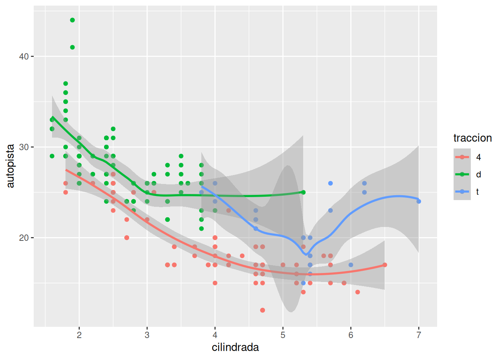</p>
</div>
</div>
<p>Cabe mencionar que esta simpleza ocasiona el doble trabajo de capturar mapeos a cada geom. Podemos introducir el concepto de mapeos globales y locales en <strong>ggplot</strong>.</p>
<p>Si escribimos el mapeo dentro de <code>ggplot()</code> podemos asignar esos valores por defecto a todos los geoms que apilemos, haciendo necesario un solo cambio si deseamos editar la estética de dichos geoms. Veamos el uso del mapeo global:</p>
<div class="cell">
<div class="sourceCode cell-code" id="cb25"><pre class="sourceCode r code-with-copy"><code class="sourceCode r"><span id="cb25-1"><a href="#cb25-1" aria-hidden="true" tabindex="-1"></a><span class="fu">ggplot</span>(<span class="at">data =</span> millas, <span class="at">mapping =</span> <span class="fu">aes</span>(<span class="at">x =</span> cilindrada, <span class="at">y =</span> autopista, <span class="at">color =</span> traccion)) <span class="sc">+</span></span>
<span id="cb25-2"><a href="#cb25-2" aria-hidden="true" tabindex="-1"></a>  <span class="fu">geom_point</span>() <span class="sc">+</span></span>
<span id="cb25-3"><a href="#cb25-3" aria-hidden="true" tabindex="-1"></a>  <span class="fu">geom_smooth</span>()</span></code><button title="Copy to Clipboard" class="code-copy-button"><i class="bi"></i></button></pre></div>
<div class="cell-output cell-output-stderr">
<pre><code>`geom_smooth()` using method = 'loess' and formula = 'y ~ x'</code></pre>
</div>
<div class="cell-output-display">
<p></p>
</div>
</div>
<p>Ahora abordemos el uso de los mapeos locales. Estos permiten ampliar o sobrescribir los mapeos globales solo en la capa donde se colocan. Así es posible mostrar diferentes estéticas en cada geom.</p>
<div class="cell">
<div class="sourceCode cell-code" id="cb27"><pre class="sourceCode r code-with-copy"><code class="sourceCode r"><span id="cb27-1"><a href="#cb27-1" aria-hidden="true" tabindex="-1"></a><span class="fu">ggplot</span>(<span class="at">data =</span> millas, <span class="at">mapping =</span> <span class="fu">aes</span>(<span class="at">x =</span> cilindrada, <span class="at">y =</span> autopista)) <span class="sc">+</span></span>
<span id="cb27-2"><a href="#cb27-2" aria-hidden="true" tabindex="-1"></a>  <span class="fu">geom_point</span>(<span class="at">mapping =</span> <span class="fu">aes</span>(<span class="at">color =</span> clase)) <span class="sc">+</span></span>
<span id="cb27-3"><a href="#cb27-3" aria-hidden="true" tabindex="-1"></a>  <span class="fu">geom_smooth</span>()</span></code><button title="Copy to Clipboard" class="code-copy-button"><i class="bi"></i></button></pre></div>
<div class="cell-output cell-output-stderr">
<pre><code>`geom_smooth()` using method = 'loess' and formula = 'y ~ x'</code></pre>
</div>
<div class="cell-output-display">
<p>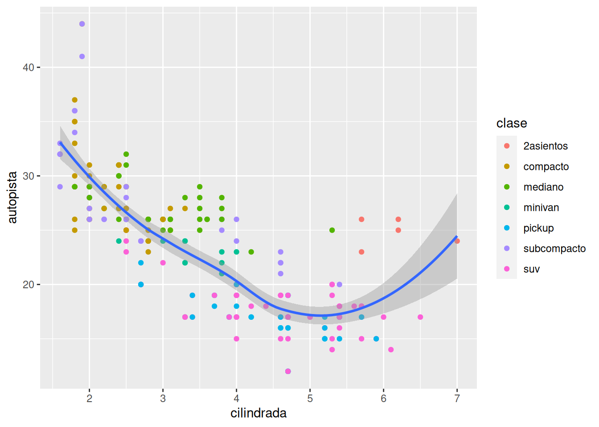</p>
</div>
</div>
<p>En este ejemplo seguiremos teniendo los mismos ejes <em>x</em> y <em>y</em> en ambos geoms, pero solo aplicamos el cambio del color en <code>geom_point()</code>.</p>
<p>Veamos ahora otro ejemplo, pero cambiando el conjunto de datos a mostrar en uno de los geoms. En este caso, grafiquemos solo los coches subcompactos en la línea suavizada utilizando la función <code>filter()</code>.</p>
<div class="cell">
<div class="sourceCode cell-code" id="cb29"><pre class="sourceCode r code-with-copy"><code class="sourceCode r"><span id="cb29-1"><a href="#cb29-1" aria-hidden="true" tabindex="-1"></a><span class="fu">ggplot</span>(<span class="at">data =</span> millas, <span class="at">mapping =</span> <span class="fu">aes</span>(<span class="at">x =</span> cilindrada, <span class="at">y =</span> autopista)) <span class="sc">+</span></span>
<span id="cb29-2"><a href="#cb29-2" aria-hidden="true" tabindex="-1"></a>  <span class="fu">geom_point</span>(<span class="at">mapping =</span> <span class="fu">aes</span>(<span class="at">color =</span> clase)) <span class="sc">+</span></span>
<span id="cb29-3"><a href="#cb29-3" aria-hidden="true" tabindex="-1"></a>  <span class="fu">geom_smooth</span>(<span class="at">data =</span> <span class="fu">filter</span>(millas, clase <span class="sc">==</span> <span class="st">"subcompacto"</span>), <span class="at">se =</span> <span class="cn">FALSE</span>)</span></code><button title="Copy to Clipboard" class="code-copy-button"><i class="bi"></i></button></pre></div>
<div class="cell-output cell-output-stderr">
<pre><code>`geom_smooth()` using method = 'loess' and formula = 'y ~ x'</code></pre>
</div>
<div class="cell-output-display">
<p>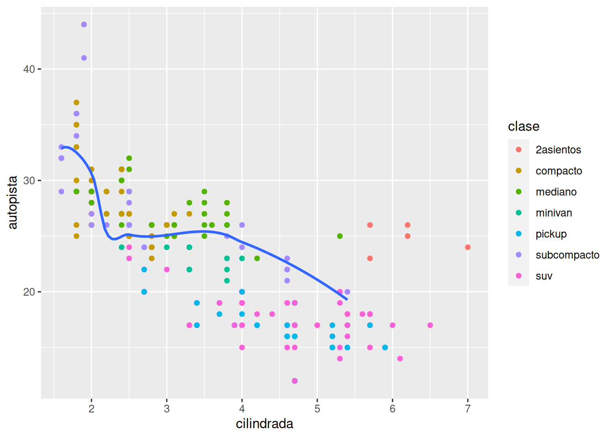</p>
</div>
</div>
<p><code>filter()</code> filtra los datos que le permitimos pasar, especificando primero el conjunto de datos original y enseguida el criterio de filtrado.</p>


</section>
</section>

</main> <!-- /main -->
<script id="quarto-html-after-body" type="application/javascript">
window.document.addEventListener("DOMContentLoaded", function (event) {
  const toggleBodyColorMode = (bsSheetEl) => {
    const mode = bsSheetEl.getAttribute("data-mode");
    const bodyEl = window.document.querySelector("body");
    if (mode === "dark") {
      bodyEl.classList.add("quarto-dark");
      bodyEl.classList.remove("quarto-light");
    } else {
      bodyEl.classList.add("quarto-light");
      bodyEl.classList.remove("quarto-dark");
    }
  }
  const toggleBodyColorPrimary = () => {
    const bsSheetEl = window.document.querySelector("link#quarto-bootstrap");
    if (bsSheetEl) {
      toggleBodyColorMode(bsSheetEl);
    }
  }
  toggleBodyColorPrimary();  
  const icon = "";
  const anchorJS = new window.AnchorJS();
  anchorJS.options = {
    placement: 'right',
    icon: icon
  };
  anchorJS.add('.anchored');
  const clipboard = new window.ClipboardJS('.code-copy-button', {
    target: function(trigger) {
      return trigger.previousElementSibling;
    }
  });
  clipboard.on('success', function(e) {
    // button target
    const button = e.trigger;
    // don't keep focus
    button.blur();
    // flash "checked"
    button.classList.add('code-copy-button-checked');
    var currentTitle = button.getAttribute("title");
    button.setAttribute("title", "Copied!");
    let tooltip;
    if (window.bootstrap) {
      button.setAttribute("data-bs-toggle", "tooltip");
      button.setAttribute("data-bs-placement", "left");
      button.setAttribute("data-bs-title", "Copied!");
      tooltip = new bootstrap.Tooltip(button, 
        { trigger: "manual", 
          customClass: "code-copy-button-tooltip",
          offset: [0, -8]});
      tooltip.show();    
    }
    setTimeout(function() {
      if (tooltip) {
        tooltip.hide();
        button.removeAttribute("data-bs-title");
        button.removeAttribute("data-bs-toggle");
        button.removeAttribute("data-bs-placement");
      }
      button.setAttribute("title", currentTitle);
      button.classList.remove('code-copy-button-checked');
    }, 1000);
    // clear code selection
    e.clearSelection();
  });
  function tippyHover(el, contentFn) {
    const config = {
      allowHTML: true,
      content: contentFn,
      maxWidth: 500,
      delay: 100,
      arrow: false,
      appendTo: function(el) {
          return el.parentElement;
      },
      interactive: true,
      interactiveBorder: 10,
      theme: 'quarto',
      placement: 'bottom-start'
    };
    window.tippy(el, config); 
  }
  const noterefs = window.document.querySelectorAll('a[role="doc-noteref"]');
  for (var i=0; i<noterefs.length; i++) {
    const ref = noterefs[i];
    tippyHover(ref, function() {
      // use id or data attribute instead here
      let href = ref.getAttribute('data-footnote-href') || ref.getAttribute('href');
      try { href = new URL(href).hash; } catch {}
      const id = href.replace(/^#\/?/, "");
      const note = window.document.getElementById(id);
      return note.innerHTML;
    });
  }
  const findCites = (el) => {
    const parentEl = el.parentElement;
    if (parentEl) {
      const cites = parentEl.dataset.cites;
      if (cites) {
        return {
          el,
          cites: cites.split(' ')
        };
      } else {
        return findCites(el.parentElement)
      }
    } else {
      return undefined;
    }
  };
  var bibliorefs = window.document.querySelectorAll('a[role="doc-biblioref"]');
  for (var i=0; i<bibliorefs.length; i++) {
    const ref = bibliorefs[i];
    const citeInfo = findCites(ref);
    if (citeInfo) {
      tippyHover(citeInfo.el, function() {
        var popup = window.document.createElement('div');
        citeInfo.cites.forEach(function(cite) {
          var citeDiv = window.document.createElement('div');
          citeDiv.classList.add('hanging-indent');
          citeDiv.classList.add('csl-entry');
          var biblioDiv = window.document.getElementById('ref-' + cite);
          if (biblioDiv) {
            citeDiv.innerHTML = biblioDiv.innerHTML;
          }
          popup.appendChild(citeDiv);
        });
        return popup.innerHTML;
      });
    }
  }
});
</script>
</div> <!-- /content -->


</body></html>